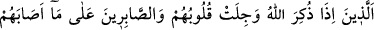
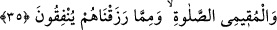
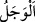

etmek/arındırmaktır.”
“O ihlâslı ve mütevazi insanları müjdele!” “el-Habt” alçak olan yerdir. “el-
Muhbit”in hakîkati ise alçakgönüllülükte yer gibi olan kimsedir. Yerle bir olmak ise
tevâzu ve ihlâsın gereklerinden olduğu için onlardan kinâye kılınması doğru olur.
Kâşifî der ki: “Ey Muhammed, fakir ve zayıf kimselere âhiretteki o sarayda büyüklük
ve ululuğa nâil olacakları müjdesini ver. Yahut korkanları sonsuz rahmetle müjdele.
Sülemî (k.s.) şöyle der: “Müştâk olan kullara, Allah’ın cemâlini görme saâdetine
erecekleri müjdesini ver. Çünkü bundan daha çok ferahlık ve huzur veren bir müjde
yoktur. Allah, muhbit/ihlâslı ve mütevazı kimselerin sıfatlarını şu şekilde bildirir:”
35. Onlar öyle kimseler ki, Allah anıldığı zaman kalpleri titrer; başlarına gelene
sabrederler, namaz kılarlar ve kendilerine rızık olarak verdiğimiz şeylerden (Allah
için) harcarlar.
“Onlar öyle kimseler ki, Allah anıldığı zaman kalpleri titrer;” el-Müfredât’ta
geçtiği üzere “ korku hissetmek demektir. Yâni onlar Allah’ın celâlinin ışıklarının
üzerinde parlaması ve azametinin nurlarının doğması sebebiyle Allah Teâlâ’dan korkar.
Zikir sırasında kalbin titremesi Hakk’ın kalbe tecellîsine göredir.
Kimde tecellî nuru artmışsa,
Haşyet ve korkusu fazlalaşmış olur.
“Başlarına gelene” musîbetlere ve sıkıntılara “sabrederler” Bahru’l-ulûm’da der ki:
“Onlar yurtlarından, akraba ve aşîretlerinden ayrılık, cefaları ve hüzünleri yutup sîneye
çekmek; Allah’ın dînine yardım, O’na itâat ve hayırları artırma konusunda meşakkatlere
ve zorluklara katlanmak hususunda sabrederler.”
Sabrın mânâsı hapsetmek, tutmak demektir.
et-Te’vîlâtü’n-Necmiyye’de der ki: “Başlarına gelene sabrederler” yâni kerih
görmeden, kendilerinden çıkıp uzaklaşmasını temennî etmeden, kurtulmayı istemeden
ilâhî hükmün cereyânı karşısında sessiz sâkin dururlar. Gönülden teslîm olurlar.
Hâfız der ki:
Lütfunla çağırırsan eğer, iyilikleri artırır
Kahrınla huzurdan kovarsan, içimiz saf ve berraktır
Tortulu ve saf şarap senin hükmünde değil, sus